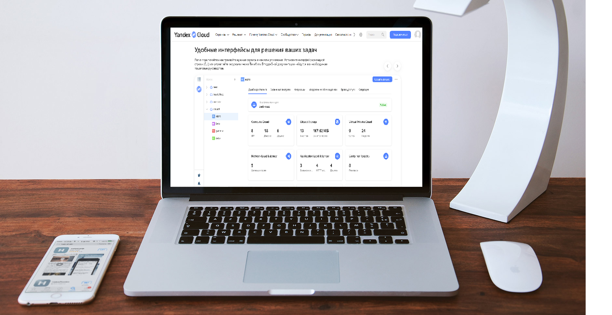
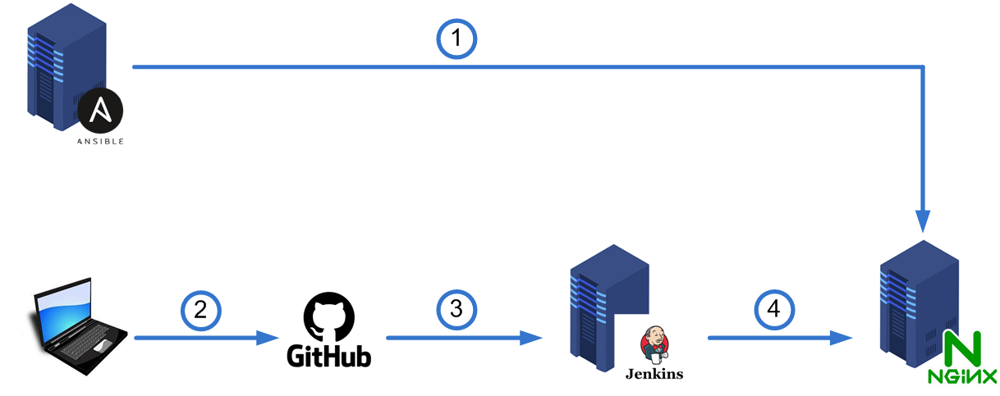

Portfolio website is situated on Yandex Cloud. Project was created using following software: Ansible, Github, Jenkins, Nginx. Operation system of virtual machines is Ubuntu 20.04. Domain name was added to the website and SSL certificate was implemented to allow access via https.

1. Virtual machine with Ansible configures Nginx on the Web server.
2. Programmer creates website and pushes it to the Github repository.
3. Virtual machine with Jenkins pulles new code from Github repository and tests it.
4. Virtual machine with Jenkins publishes code from Github repository to the Web server if tests were successful.